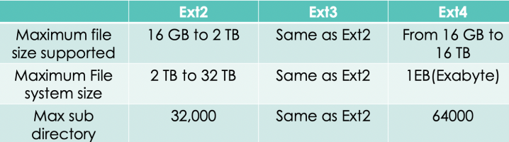

Describe Ext3 File System
• Enhanced Ext2
• To be journaling filesystem
• Compatible with old Ext2 filesystem
• Idea behind Ext3 journaling is to perform each high-level change to file system
• Copy of blocks to be written is stored in journal
• When I/O data transfer to journal is completed the blocks are written in filesystem
• When I/O data transfer to filesystem terminates the copies of blocks in journal are discarded
• File system data and metadata changes are logged into journal
• This minimises the chance of losing the updates made to each file but requires many additional disk access
• When new file is created all data blocks must be duplicated as log records
• Journaling filesystem maintains special file called journal that is used to repair inconsistencies that occur as result of improper shutdown of computer
